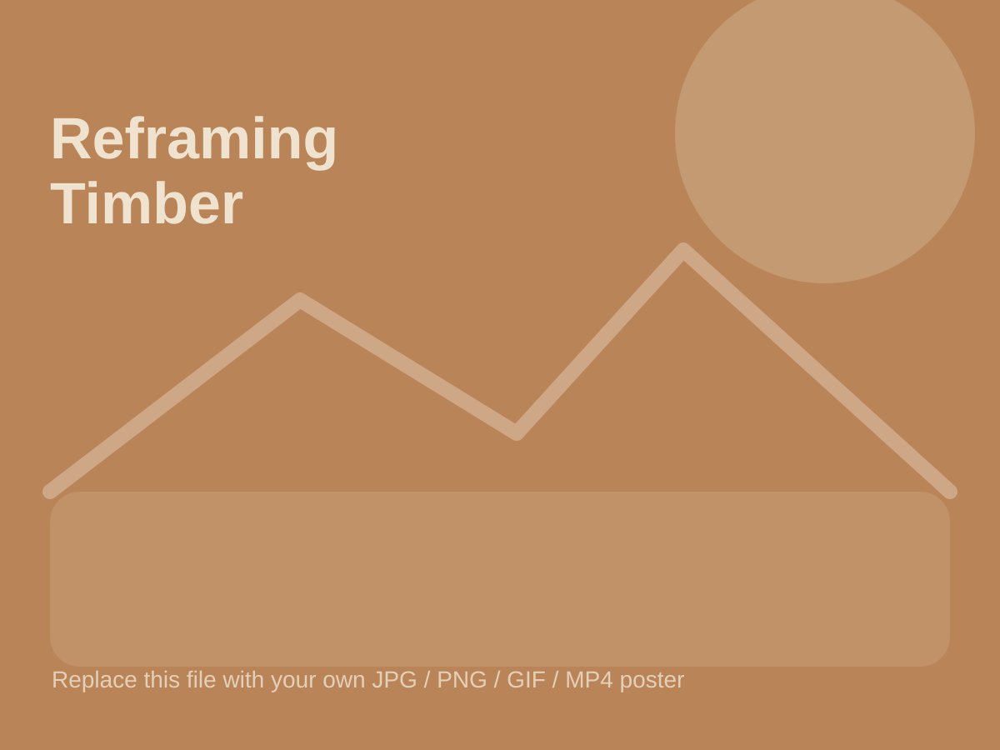

Architecture | 2026
Reclaimed Timber Facility

Overview
This project proposes a timber facility that reframes demolished and urban trees as valuable material resources. The design combines a showroom, co-working area, workshop, and material processing spaces to make the lifecycle of timber visible to visitors, designers, and clients.
Replace this text with your own project description. Explain the site, design intention, main spatial strategy, environmental approach, and what makes the project important.
Design Strategy
The showroom is organised around social connection and material education. Visitors can see, touch, and test real timber components, while workshops demonstrate how reclaimed timber can be cleaned, sorted, reused, and assembled into new architectural systems.